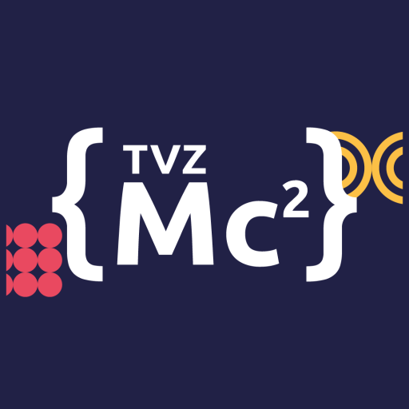

Pravila natjecanja
Natjecanje pruža priliku svim studentima TVZ-a koji žele naučiti razvijati aplikacije za moderne platforme da u samo nekoliko mjeseci primjene znanje marketinga, programiranja i dizajniranja na rješavanju konkretnih problema kroz timski i aktivni rad s mentorima iz poslovne ICT zajednice. Studenti time usvajaju vrijedna praktična znanja iz područja tehničkih aktivnosti što je najbolji način njihova uključivanja u proizvodni ICT sektor i uspješno natjecanje na tržištu rada. TVZ Mobile challenge cup (TVZ Mc2) studentsko je natjecanje koje od 2013. godine organizira Studentski zbor Tehničkog veleučilišta u Zagrebu te, 12. godinu zaredom, potvrđuje uspješnost budućih programera i dizajnera TVZ-a. Radi se o najvećem studentskom natjecanju u izradi, dizajnu i marketingu mobilnih, web i IoT rješenja u Hrvatskoj.
